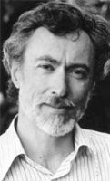

(1940 – )

Afrika edebiyatı genellikle, fazla bilinmeyen bir edebiyattır. Neyse ki insanlığın yüz karası olan ırkçılık (en azından resmen) ortadan kaldırılmış durumda. Ancak Güney Afrika Cumhuriyeti devletinin resmi ırkçılık politikası "apartheid" rejimi, uygulandığı yüzyıllar boyunca –siyah ya da beyaz– tüm Afrikalılar üzerinde korkunç etkiler bıraktı. Beyaz olan romancı J. M. Coetzee de bunlardan biridir.
Daha çok "J. M. Coetzee" adıyla tanınan yazar John Maxwell Coetzee (okunuşu: Can Maksvıl Koetzi), 1940 yılında Güney Afrika Cumhuriyeti'nin başkenti Cape Town'da doğdu. İki çocuklu ailenin babası avukat, annesi ise ilkokul öğretmeniydi. Yazarın ailesi, 17. yüzyılda ülkeye gelen ilk Hollandalı göçmenlerdendi ve aile İngiliz kökenli olmamasına rağmen evdeki konuşma dili İngilizce idi. Coetzee'nin babası hukuk öğrenimi görmüştü, ama 1941-45 yılları arasında Kuzey Afrika ve İtalya topraklarındaki Güney Afrika Cumhuriyeti ordusunda görev yaptı. Coetzee, ilk yıllarını Cape Town ve Worcester'da geçirdi. 1997 yılında yayımlanan kitabı Çocukluk biraz da kurgusal biçimde, o yılları anlatmaktadır. Yazar, Cape Town Üniversitesi'nde Matematik ve İngilizce okudu. 1957'de girdiği Cape Town Üniversitesi'nin İngilizce bölümünden 1960'da, Matematik bölümünden de 1961'de mezun oldu
1960'ların başında Coetzee, Londra'ya taşındı. Bir süre IBM firmasında bilgisayar programcısı olarak çalıştı. Aynı günlerde de İngiliz romancı Ford Madox Ford üzerine araştırmalar yapıyordu. Yazar, 1963'te Philippa Jubber'la evlendi ve Nicolas adında bir oğlu (1966-1989) ve Gisela adında bir kızı (1968- ) dünyaya geldi. Bu dönemdeki hayat hikayesini, sonradan Gençlik (2002) adlı kitabında anlattı.
Coetzee, doktorasını Teksas Üniversitesi'nde yaptı ve 1968 yılında tamamladığı doktora tezinin konusu "Samuel Beckett'ın ilk yapıtları" oldu. 1968-1971 yılları arasında New York Eyalet Üniversitesi'nde İngilizce ve Edebiyat dersleri verdi. 1971 yılında ABD'de kalıcı oturma izni için başvurdu, ancak "özgürlükler ülkesi" Amerika'da kalma başvurusu "Vietnam Savaşı karşıtı protestolarda gözaltına alınmış olması" gerekçe gösterilerek reddedildi. Cape Town Üniversitesi'nde İngiliz edebiyatı profesörlüğü yapmak üzere Güney Afrika'ya döndü. 2002 yılında emekli olduktan sonra Avustralya'ya göç ederek Adelaide'e yerleşti ve Adelaide Üniversitesi'nde araştırma görevlisi oldu. 2003 yılına kadar Chicago Üniversiesi'nde ders verdi. 6 Mart 2006 tarihinde, Avustralya vatandaşı oldu.
J. M. Coetzee, yazarlığa 1969'da başladı. İlk kitabı Alacakaranlık Ülke, 1974'te Güney Afrika Cumhuriyeti'nde yayımlandı. 1977 yılında yayımlanan Ülkenin Kalbinde adlı romanı, Güney Afrika'nın en saygın edebiyat ödülünü almasının ardından Britanya ve ABD'de de yayımlandı. Ülkemizde de büyük ilgi gören romanı Barbarları Beklerken 1980'de yayımlanınca yazarına uluslararası ün kazandırdı. 1983'te yayımlanan romanı Michael K'nın Hayatı ve Yaşadığı Dönem Britanya'nın önemli Booker Ödülü'nü kazandı. Ardından Düşman (1986), Demir Çağı (1990), Petersburglu Usta (1994) ve bir Booker Ödülü daha kazandıran Utanç (1999) adlı romanları geldi.
Coetzee, romanları dışında da ürünler verdi. Kurgusal anılarını anlatan Çocukluk (1997) ve Gençlik (2002), Güney Afrika edebiyatını ve kültürünü anlatan Beyaz Yazı (1988), edebiyatta sansürü anlatan Utandırmak (1996) ve edebi yazılarını topladığı Daha Garip Kıyılar (2001) bunlardan bazılarıdır.
Şimdilerde hayat arkadaşı Dorothy Driver ile Avustralya'da yaşayan ve Adelaide Üniversitesi'nde onursal bir kürsüsü bulunan J. M. Coetzee, Felemenkçe ve Afrika dillerinden çeviriler de yapmaktadır ve 2003 yılında Nobel Edebiyat Ödülü'nü kazanmıştır.
Seçme Romanları: Barbarları Beklerken (1980), Michael K. Hayatı ve Yaşadığı Dönem (1983), Foe (1986), Demir Çağı (1990), Petersburglu Usta (1994), Utanç (1999), Hayvanların Hayatı (1999), Romancının Romanı (2003), Yavaş Adam (2005)